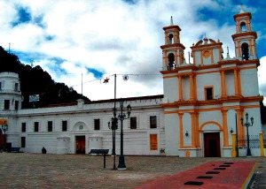
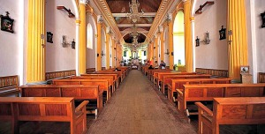
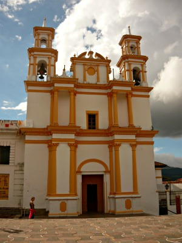
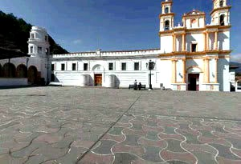
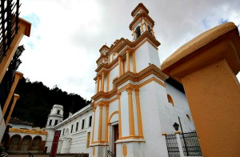

La Iglesia de La Merced fue el primer convento e iglesia fundado tras la iniciativa de cuatro frailes Mercedarios provenientes de Guatemala en 1537. La sencillez de su arquitectura se debe a la poca influencia que tuvo esa orden en la vida religiosa y civil de la provincia. El interior de la sacristía conserva la construcción original de un arco romano vigilado por dos leones, simbolizando el dominio español y decorado con motivos florales y relieves de argamasa que representan el sol y la luna.
El templo de la merced se reedificó en 1834 y estuvo al cuidado de los frailes hasta 1859, la patrona de la iglesia es la virgen de las mercedes.
Se encuentra ubicada en la calle Diego de Mazariegos a 3 cuadras del parque central.
Si usted se encuentra ubicado en la plaza de la paz viendo de frente hacia la catedral puede caminar hacia atrás como referencia encontrará frente a la plaza el asilo de ancianos San Juan de Dios camine sobre esa acera hasta llegar a la esquina pasando por Bancomer cruce la calle y continue caminando una cuadra mas pasando por scotiabank y al llegar a la esquina de vuelta a la derecha y camine 3 cuadras hasta encontrar la iglesia de la Merced.
En el lugar usted puede realizar actividades como:
* Fotografía
* Visita a lugares históricos
* Visita a iglesias
* Manifestaciones Religiosas





posicione el mouse sobre las imágenes